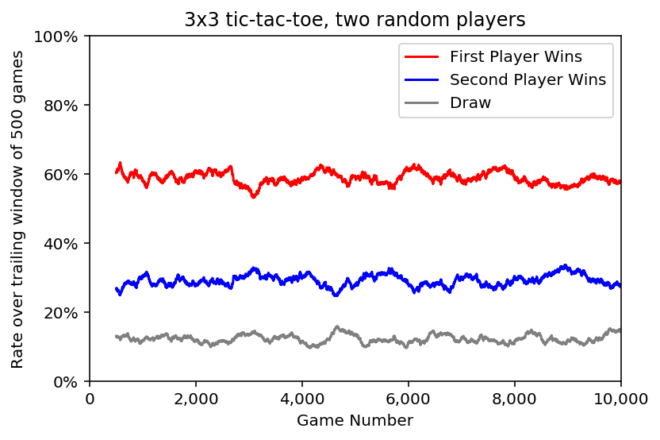
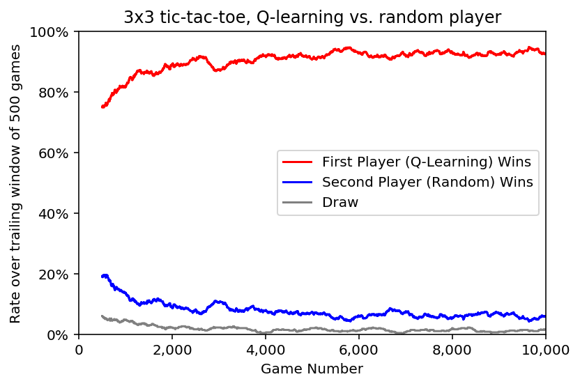
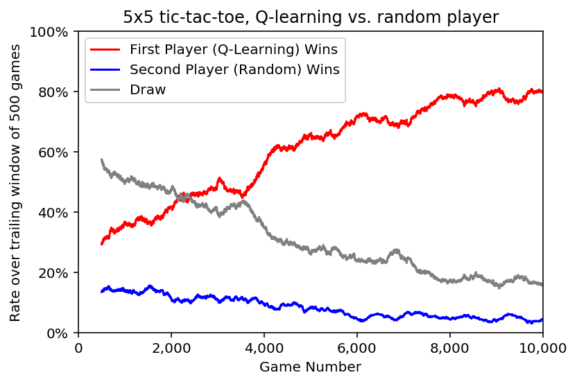

Q-Learning Tic-Tac-Toe, Briefly
Sunday November 3, 2019
Tic-tac-toe doesn't call for reinforcement learning, except as an exercise or illustration. Recently, I saw several examples implementing Q-learning, all of which were rather long. I thought I'd give tic-tac-toe with Q-learning a try myself, using Python and TensorFlow, aiming for brevity.
The board is represented with a matrix, where zero means empty.
def new_board(size):
return np.zeros(shape=(size, size))Moves are represented by their coordinates, like [0, 0] for the
upper left.
def available_moves(board):
return np.argwhere(board == 0)The first player is +1 and the second player is -1, so having
three in a row means getting a row, column, or diagonal to sum to +3
or -3, respectively.
def check_game_end(board):
best = max(list(board.sum(axis=0)) + # columns
list(board.sum(axis=1)) + # rows
[board.trace()] + # main diagonal
[np.fliplr(board).trace()], # other diagonal
key=abs)
if abs(best) == board.shape[0]: # assumes square board
return np.sign(best) # winning player, +1 or -1
if available_moves(board).size == 0:
return 0 # a draw (otherwise, return None by default)Q-learning will require some state, so a player will be an object with
a move method that takes a board and returns the coordinates of the
chosen move. Here's a random player:
class RandomPlayer(Player):
def move(self, board):
return random.choice(available_moves(board))This is sufficient for the game loop, starting from any initial board:
def play(board, player_objs):
player = +1
game_end = check_game_end(board)
while game_end is None:
move = player_objs[player].move(board)
board[tuple(move)] = player
game_end = check_game_end(board)
player *= -1 # switch players
return game_endSo this plays out a game between two random players and gives the result:
play(new_board(3), {+1: RandomPlayer(), -1: RandomPlayer()})Playing out 10,000 games, it's clear that the first random player is more likely to win, and also that results can vary a good deal even when averaging over 500 games.

Here's a boring player that chooses the first available move from left to right, top to bottom:
class BoringPlayer(Player):
def move(self, board):
return available_moves(board)[0]Games between boring players always end the same way. The comparison with the random player is more interesting. This table give results for 10,000 games per row:
| Size | First Player | Second Player | Draw |
|------|--------------|---------------|------|
| 3x3 | Random: 59% | Random: 29% | 12% |
| 3x3 | Boring: 78% | Random: 18% | 4% |
| 3x3 | Random: 52% | Boring: 44% | 4% |The boring player does better than a random player whether it plays first or second. Now we have multiple "baselines." A learning agent should do better than the baselines.
The Q-learning player starts with a neural network that takes a board as input and produces an estimate of how good each move is from that position: Q-values.
class Agent(Player):
def __init__(self, size):
self.size = size
self.model = tf.keras.Sequential()
self.model.add(tf.keras.layers.Dense(size**2))
self.model.compile(optimizer='sgd', loss='mean_squared_error')A couple helper methods make the interface nicer for using and training the neural net. (There may be a better way of achieving this.)
def predict_q(self, board):
return self.model.predict(
np.array([board.ravel()])).reshape(self.size, self.size)
def fit_q(self, board, q_values):
self.model.fit(
np.array([board.ravel()]), np.array([q_values.ravel()]), verbose=0)The Q-learning agent preserves some history, which is reset when a new game starts.
def new_game(self):
self.last_move = None
self.board_history = []
self.q_history = []The move method uses the Q-network to choose the best available move
and then calls the reward method to operationalize Q-learning's
Bellman equation.
def move(self, board):
q_values = self.predict_q(board)
temp_q = q_values.copy()
temp_q[board != 0] = temp_q.min() - 1 # no illegal moves
move = np.unravel_index(np.argmax(temp_q), board.shape)
value = temp_q.max()
if self.last_move is not None:
self.reward(value)
self.board_history.append(board.copy())
self.q_history.append(q_values)
self.last_move = move
return moveThe reward method trains the Q-network, updating a previous estimate
of Q-values with a new estimate for the last chosen move.
def reward(self, reward_value):
new_q = self.q_history[-1].copy()
new_q[self.last_move] = reward_value
self.fit_q(self.board_history[-1], new_q)Using a play function that resets games and delivers a reward of
+1 for wins and -1 for losses and draws (see the full
notebook), a Q-learning agent plays a random agent:

The Q-learning player quickly achieves much stronger play than the baselines.
| Size | First Player | Second Player | Draw |
|------|--------------|---------------|------|
| 3x3 | Random: 59% | Random: 29% | 12% |
| 3x3 | Boring: 78% | Random: 18% | 4% |
| 3x3 | Random: 52% | Boring: 44% | 4% |
| 3x3 | Q-Learn: 93% | Random: 6% | 1% |
| 3x3 | Random: 21% | Q-Learn: 78% | 1% |(For Q-learning players, they play 10,000 games while learning and then another 10,000 games while frozen to evaluate their performance level after learning, which is what's shown in the table.)
And that's it! Tic-tac-toe with a Q-learning agent, comfortably under 100 lines of code.
Ideas for doing more
- The Q-learning player didn't achieve a "perfect" strategy in which it never loses. Why not? Can you fix it? Further ideas below may contribute to a solution.
- You can write your own perfect tic-tac-toe player, or use a package like xo. How does the Q-learning player do against a perfect player?
- For tic-tac-toe, it's also possible to implement tabular Q-learning: a table keeps track of the estimated Q-value for every board state/action combination. How does this compare to the neural net approach here, in terms of game performance, sample efficiency, and space/time/compute complexity? The network architecture here has just 90 parameters, which is a good deal less space than is needed for a full table. What are the trade-offs? (Thanks to Chris Marciniak for suggesting this topic.)
- The initialization of the network and the play of the random opponent vary from run to run. How consistent are results? How do they vary? What source of randomness matters more?
- How can you analyze and describe the "strategies" that the system learns? How much do these vary from run to run, or when varying other things?
- Draws require nine moves, but it's possible to win in five. How does game length vary by player strategy and over the course of training the Q-learning player?
- The Q-learning algorithm here is simplified, with no reward decay, for example. Can you re-complicate the algorithm and perhaps achieve shorter game lengths?
- There is no explicit exploration mechanism in the Q-learning algorithm here. Can you add one and improve performance?
- What happens when the Q-learning player plays against the boring player, and what does this suggest?
- What happens when a Q-learning player plays against one type of player, and then faces a different player? How can this vary and what does it suggest?
- None of the players in these implementations are ever told which player they are, and none of them explicitly work it out for themselves, though this is possible. How does a Q-learning player that has played as first player do when made to play as second player instead? Can you improve this?
- How effective is self-play (Q-learning player vs. another Q-learning player)?
- Can you quantify the sample efficiency of the Q-learning algorithm, which should capture how many games or moves the algorithm needs to learn a good strategy?
- There are lots of enhancements to Q-learning, for example experience replay. Can you improve sample efficiency using such a mechanism?
- There are symmetries in the tic-tac-toe board; can you take advantage of these?
- The neural network used here is very simple. It is not at all
"deep," for example. Does a more sophisticated network architecture
give better results?
- Convolutional filters are useful in neural networks for computer vision. Can this kind of domain-specific approach inform an architecture design specialized for tic-tac-toe?
- The form of the input to the neural network here has only nine elements, which can each be positive or negative. Especially with a simple network architecture, this may not be ideal. (For example, consider how the current setup manifests the exclusive or (XOR) problem.) What other board representations can you use as input to the neural net? Do some work better than others?
- Lots of defaults are used in the implementation here, for example for the neural network's learning rate. Can you find better values?
- The rewards for a loss and a tie are both
-1in the implementation here. What happens when ties aren't as bad as losses? Is zero a good reward for a tie? - The code shown here aims to be brief. Is this good or bad for readability, maintainability, and extensibility? Are other characteristics also important? How can you improve the code?
- Experiment with different board sizes:
| Size | First Player | Second Player | Draw |
|------|--------------|---------------|------|
| 3x3 | Random: 59% | Random: 29% | 12% |
| 4x4 | Random: 31% | Random: 27% | 42% |
| 5x5 | Random: 25% | Random: 15% | 60% |As the board gets bigger, the advantage of going first decreases and the probability of a draw goes up considerably.
It also takes a good deal more games to learn a good strategy:

For the implementations here, some results are as follows:
| Size | First Player | Second Player | Draw |
|------|--------------|---------------|------|
| 4x4 | Random: 31% | Random: 27% | 42% |
| 4x4 | Q-Learn: 83% | Random: 10% | 7% |
| 4x4 | Random: 11% | Q-Learn: 80% | 9% |
| 5x5 | Random: 25% | Random: 15% | 60% |
| 5x5 | Q-Learn: 79% | Random: 5% | 16% |
| 5x5 | Random: 18% | Q-Learn: 53% | 29% |What is optimal for these larger boards? How well can you do? At what point is a Q-learning approach more effective (considering the trade with compute time) than exhaustive minimax search, if ever?